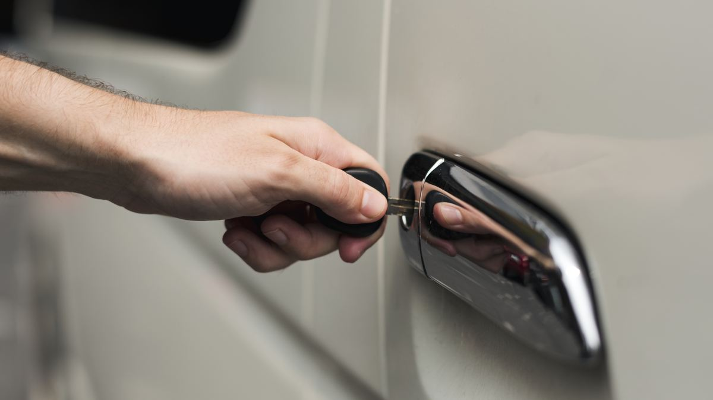
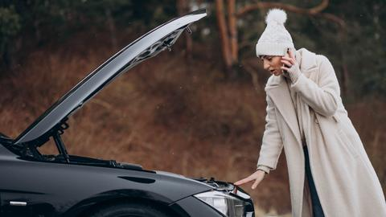

Usługa · Kielce i okolice
Awaryjne otwieranie samochodów w Kielcach – całą dobę
Kluczyki zostały w kabinie albo w bagażniku, akumulator się rozładował, a zamek nie reaguje na pilota? Zajmujemy się awaryjnym otwieraniem samochodów w Kielcach i okolicy – o każdej porze dnia i nocy, 7 dni w tygodniu. Przyjedziemy do auta, sprawdzimy dokumenty i otworzymy je bez wybijania szyby i podważania drzwi.

W czym pomożemy
- Kluczyki zatrzaśnięte w kabinie – także wtedy, gdy auto zablokowało się samo
- Kluczyki zamknięte w bagażniku
- Rozładowany akumulator – pilot i centralny zamek nie reagują
- Zamek drzwi, którego nie da się otworzyć kluczykiem, np. zamarznięty lub zablokowany
- Auta z systemem keyless, które zamknęły się z kluczykiem w środku
- Kluczyk zginął? Otworzymy auto i przygotujemy nowy kluczyk
- Dziecko lub zwierzę w zamkniętym aucie – najpierw dzwoń na 112
Co przygotować
- Dokument tożsamości ze zdjęciem, np. dowód osobisty
- Dowód rejestracyjny – a gdy leży w zamkniętym aucie, wystarczy okazać go tuż po otwarciu
- Upoważnienie od firmy, jeśli auto jest służbowe lub leasingowe
- Marka, model, rocznik i dokładne miejsce postoju – do wyceny przez telefon
Nie otworzymy auta, dopóki nie sprawdzimy, że masz do niego prawo. Gdy tego nie da się ustalić, odmawiamy – to chroni także Twój samochód.
Jak to wygląda
- 1
Telefon lub SMS
Mówisz, gdzie stoi auto, jaka to marka i model oraz gdzie zostały kluczyki. Jeśli nie odbieramy, wyślij SMS – oddzwonimy.
- 2
Wycena przez telefon
Mówimy, ile będzie kosztować otwarcie, i umawiamy przyjazd. Kwotę potwierdzamy przy aucie, zanim zaczniemy.
- 3
Dokumenty i otwarcie
Sprawdzamy dokument tożsamości i otwieramy zamek – najczęściej profesjonalnym dekoderem, bez wybijania szyby.
- 4
Kontrola
Porównujemy dane z dowodem rejestracyjnym i razem sprawdzamy, czy zamki, szyby i centralny zamek działają.
Awaryjne otwieranie samochodów – jak to robimy
Najczęściej dostajemy się do auta przez zamek w drzwiach, korzystając z profesjonalnych dekoderów do zamków samochodowych. To precyzyjne narzędzia ślusarskie, dobierane do konkretnego typu zamka. Dzięki nim nie trzeba podważać drzwi, odginać ramy szyby ani jej zbijać. Gdy dekoder do danego zamka nie pasuje, otwieramy auto inną metodą mechaniczną – również bez uszkadzania drzwi i szyb.
Zanim zaczniemy, mówimy, jak zamierzamy otworzyć Twoje auto i czy widzimy jakieś ryzyko, na przykład przy zamku skorodowanym, zamarzniętym albo już wcześniej uszkodzonym. Decyzja należy do Ciebie. Cenę znasz wcześniej: ustalamy ją przez telefon, a przy aucie potwierdzamy, zanim weźmiemy się do pracy.
Nie próbuj otwierać auta drutem, wieszakiem ani klinem wsuniętym w drzwi. Łatwo wtedy porysować lakier, naderwać uszczelkę albo uszkodzić mechanizm szyby – a usuwanie takich szkód bywa droższe niż samo otwarcie.
Dokumenty i weryfikacja właściciela
Kto otworzy auto, ma w zasięgu ręki wszystko, co zostało w kabinie – często także kluczyk. Dlatego każde zlecenie zaczynamy od sprawdzenia, czy samochód jest Twój albo czy możesz nim dysponować. Porównujemy dokument tożsamości z danymi w dowodzie rejestracyjnym. Jeśli nie da się potwierdzić uprawnień, odmawiamy otwarcia.
Od 1 października 2018 roku kierowca auta zarejestrowanego w Polsce nie musi wozić ze sobą dowodu rejestracyjnego, więc wiele osób trzyma go w domu albo w schowku. Jeśli dokument jest zamknięty w aucie, sprawdzimy go zaraz po otwarciu, zanim cokolwiek zabierzesz ze środka. Jeśli został w domu, uprzedź nas o tym w rozmowie – zanim wyjedziemy, wspólnie znajdziemy sposób na potwierdzenie Twoich uprawnień. Przy samochodzie służbowym lub leasingowym przygotuj upoważnienie od firmy.
Do każdego zlecenia przyjeżdża osobiście właściciel firmy, Łukasz. Figuruje na prowadzonej przez Policję liście kwalifikowanych pracowników zabezpieczenia technicznego, a wpisu dokonał Komendant Wojewódzki Policji. Co daje Ci taki wpis, przeczytasz w poradniku o kwalifikowanych pracownikach zabezpieczenia technicznego, a kto przyjedzie do Twojego auta – na stronie o nas.
Gdzie stoi auto? Co powiedzieć przez telefon
Przyjeżdżamy tam, gdzie stoi samochód: pod blok, na parking przy galerii handlowej, pod szpital, na stację paliw albo na leśny parking za miastem. Obsługujemy całe miasto i okoliczne gminy, między innymi Chęciny, Morawicę, Masłów i Piekoszów – pozostałe miejscowości wymieniamy na stronie obszar działania. Kiedy dotrzemy na miejsce, uzgadniamy w rozmowie telefonicznej.
Żebyśmy szybko trafili na miejsce, przygotuj:
- adres albo nazwę obiektu, a na dużym parkingu także sektor, wjazd lub numer miejsca;
- przy garażu podziemnym – poziom i informację, czy wjazd wymaga karty lub biletu (pod ziemią często nie ma zasięgu, więc zadzwoń z powierzchni);
- przy trasie S7 – kierunek jazdy i najbliższy węzeł albo nazwę stacji paliw;
- markę, kolor i numer rejestracyjny auta.
Numer telefonu i adres firmy znajdziesz też na stronie kontakt.
Keyless, podwójne ryglowanie i trudniejsze przypadki
Nowsze auta bywają bardziej wymagające. W samochodach z systemem keyless zdarza się, że auto nie wykryje kluczyka leżącego w środku i zablokuje drzwi. Część modeli ma też podwójne ryglowanie, które unieruchamia klamki również od wewnątrz. Sposób otwarcia dobieramy wtedy do konkretnego modelu, dlatego przy zgłoszeniu pytamy o markę, model i rocznik.
Jeśli kluczyka nie ma w aucie, bo zginął, samo otwarcie nie rozwiąże problemu. Możemy wtedy przygotować także nowy kluczyk – szczegóły opisujemy na stronie o utracie wszystkich kluczyków, a zapasowe kluczyki i piloty – przy usłudze dorabiania i kodowania kluczyków.
W zamkniętym aucie zostało dziecko albo zwierzę? Najpierw dzwoń na 112 – zwłaszcza w upał lub mróz nie czekaj na nasz przyjazd. Co robić do czasu przyjazdu służb, podpowiadamy w poradniku dziecko lub pies w zamkniętym aucie.
Pytania i odpowiedzi
Czy otwieracie samochody w nocy i w weekendy?
Ile kosztuje awaryjne otwarcie samochodu?
Czy po otwarciu zostaną ślady?
Dowód rejestracyjny jest w zamkniętym aucie. Co wtedy?
Ile trwa samo otwarcie?
Mam assistance w polisie. Czy warto z niego skorzystać?
Kluczyki do popularnych marek
Działamy w Kielcach i okolicach
Przydatne porady
 Otwieranie auta
Otwieranie autaKluczyki zatrzaśnięte w aucie – co zrobić krok po kroku
Kluczyki zatrzaśnięte w aucie to jedna z najczęstszych wpadek kierowców. Podpowiadamy, co zrobić krok po kroku, czego unikać, żeby nie narobić szkód, i jak nie dopuścić do powtórki.
Czytaj · 4 min Otwieranie auta
Otwieranie autaKluczyki w bagażniku – co zrobić, gdy klapa się zatrzasnęła
Kluczyki w bagażniku, klapa zatrzaśnięta, a może całe auto zamknięte? Wyjaśniamy, co sprawdzić najpierw, czego nie robić i kiedy wezwać pomoc, żeby nie dokładać sobie kosztów.
Czytaj · 4 min Otwieranie auta
Otwieranie autaZamarznięty zamek w aucie – jak sobie poradzić zimą
Mróz, poranek, a kluczyk nie chce wejść do zamka albo drzwi ani drgną? Zamarznięty zamek w aucie to zimowa klasyka – podpowiadamy, jak go bezpiecznie odmrozić, czego nie robić i jak zapobiegać.
Czytaj · 4 min
Otwieranie autaRozładowany akumulator i zamknięte auto – jak dostać się do środka
Pilot nie reaguje, kierunkowskazy nie migają, a drzwi ani drgną? Rozładowany akumulator to częsty powód, dla którego nie możesz otworzyć auta – wyjaśniamy, jak dostać się do środka i co zrobić dalej.
Czytaj · 4 min Porady praktyczne
Porady praktyczneIle kosztuje otwarcie samochodu? Od czego zależy cena
Ile kosztuje otwarcie samochodu, gdy kluczyki zostały w środku? Konkretnej kwoty nie da się rzetelnie podać „w ciemno” – zobacz, od czego zależy cena, o co pytać i jak nie przepłacić.
Czytaj · 4 min Otwieranie auta
Otwieranie autaDziecko zamknięte w samochodzie lub pies w aucie – co robić
Dziecko zamknięte w samochodzie albo pies w nagrzanym aucie to sytuacja, w której liczą się minuty – najpierw dzwoń na 112. Potem przeczytaj, co jeszcze możesz zrobić i jak zapobiec takiemu zdarzeniu.
Czytaj · 4 minPotrzebujesz pomocy teraz?
Zadzwoń – powiemy, ile to potrwa i ile będzie kosztować, zanim wyjedziemy.